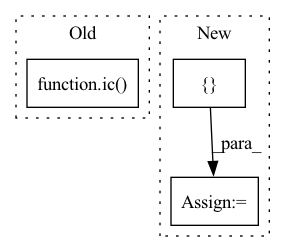

Pattern ID :31928
Before Change
while elm is not None:
// TODO: Quintuplet, tuplet, generalize to `plet`
if hasattr(elm, "fullName") and post in elm.fullName:
ic( number, "processing tuplets")
pref = elm.fullName[:elm.fullName.find(post)].split()[-1]
tup = f"{pref}{post}"
ic(elm.fullName, pref, tup)
if number == 134:After Change
// All triple notes with the same `n_tup` are added
assert sum(len(tup) for tup in lst[idx_tup_strt:]) == len(elms_tup)
if not keep_chord:
tups_new = []
has_chord = False
for i in range(idx_tup_strt, len(lst)): // Ensure all tuplet groups contain no Chord
tup = lst[i]
// Bad transcription quality => Keep all possible tuplet combinationsIn pattern: SUPERPATTERN
Frequency: 6
Non-data size: 3
Instances Fragment ID: 93368464
Project Name: stefanheng/symbolic-music-generation
Commit Name: 7d2ebd5026f91738d46d1fc81d377d45420a5df8
Time: 2022-01-31
Author: 43276957+SpongeBobBang@users.noreply.github.com
File Name: musicnlp/preprocess/music_extractor.py
M Class Name: AnonimousClass
N Class Name: AnonimousClass
M Method Name: expand_bar(3)
N Method Name: expand_bar(3)
M Parent Class:
N Parent Class:
M File Name: musicnlp/preprocess/music_extractor.py
N File Name: musicnlp/preprocess/music_extractor.py
M Start Line: 44
M End Line: 116
N Start Line: 44
N End Line: 141
Before Change
sign_flip[sign_flip >= 0.5] = 1.0
sign_flip[sign_flip < 0.5] = -1.0
eig_vals = eig_vals.unsqueeze(0).repeat(eig_vecs.shape[0], 1)
ic( eig_vecs)
return torch.stack([eig_vals, eig_vecs], dim=-1)
def get_graph(self, idx):
if idx in self.dgl_graphs:After Change
sign_flip[sign_flip >= 0.5] = 1.0
sign_flip[sign_flip < 0.5] = -1.0
eig_vals = eig_vals.unsqueeze(0).repeat(eig_vecs.shape[0], 1)
g.ndata["pos_enc"] = torch.stack([ eig_vals, eig_vecs Fragment ID: 93368469
Project Name: hannesstark/3dinfomax
Commit Name: a165907548f15c7571758457fe0867a83ad049dc
Time: 2021-07-03
Author: hannes.staerk@gmail.com
File Name: datasets/ogbg_dataset_extension.py
M Class Name: OGBGDatsetExtension
N Class Name: OGBGDatsetExtension
M Method Name: data_by_type(3)
N Method Name: data_by_type(3)
M Parent Class: GraphPropPredDataset
N Parent Class: GraphPropPredDataset
M File Name: datasets/ogbg_dataset_extension.py
N File Name: datasets/ogbg_dataset_extension.py
M Start Line: 50
M End Line: 55
N Start Line: 53
N End Line: 66
Before Change
for i in range(self.num_conformers - 1):
conformer_graph = copy.deepcopy(batched_graph)
ic(conformer_graph.number_of_nodes())
ic( i)
ic(i + 3)
conformer_graph.ndata["x"] = conformers[i:i + 3]
conformer_graphs.append(conformer_graph)
batched_graph3d = dgl.batch(graphs3d)After Change
graphs, graphs3d, conformers, *targets = map(list, zip(*batch))
conformers = torch.cat(conformers, dim=0)
batched_graph3d = dgl.batch(graphs3d)
conformer_graphs = [ batched_graph3d Fragment ID: 93368470
Project Name: hannesstark/3dinfomax
Commit Name: d90f479e30d373c31eabebd699666ec3b9101c3a
Time: 2021-06-18
Author: hannes.staerk@gmail.com
File Name: datasets/custom_collate.py
M Class Name: ConformerCollate
N Class Name: ConformerCollate
M Method Name: __call__(2)
N Method Name: __call__(2)
M Parent Class: object
N Parent Class: object
M File Name: datasets/custom_collate.py
N File Name: datasets/custom_collate.py
M Start Line: 64
M End Line: 80
N Start Line: 65
N End Line: 77
Before Change
elif exp == "symbol":
// Per `music21`, duration is represented in terms of quarter notes
slot_dur = int(2**-2 / 2**-self.prec) // Duration of a time slot
ic( slot_dur)
// Get signature for each bar
bars = iter(list(part[m21.stream.Measure]))
bar0 = next(bars)After Change
ts = next(iter(ts_))
lst_bar_n_ts.append((bar, ts))
encs = []
for i, (bar, ts) in enumerate(lst_bar_n_ts):
ic(bar.number)
MxlMelodyExtractor.BarEnc(bar, ts, self.prec)
// if i == 2: // TODO: debug Fragment ID: 93368472
Project Name: stefanheng/symbolic-music-generation
Commit Name: 5b9b53154362b7919f6a530495251afd4ec735b3
Time: 2021-12-18
Author: 43276957+SpongeBobBang@users.noreply.github.com
File Name: melody_extractor.py
M Class Name: MxlMelodyExtractor
N Class Name: MxlMelodyExtractor
M Method Name: bar_with_max_pitch(2)
N Method Name: bar_with_max_pitch(2)
M Parent Class:
N Parent Class:
M File Name: melody_extractor.py
N File Name: melody_extractor.py
M Start Line: 475
M End Line: 490
N Start Line: 486
N End Line: 498
Before Change
pos_enc = self.pos_enc_mlp(pos_enc) // [batch_size, max_num_atoms, num_eigvec, pos_enc_dim]
pos_enc = pos_enc.sum(dim=2) // [batch_size, max_num_atoms, pos_enc_dim]
ic(h.shape)
ic( pos_enc.shape)
h = torch.cat([h,pos_enc], dim = -1 ) // [batch_size, max_num_atoms, hidden_dim]
h_in = h
for mp_layer in self.mp_layers:After Change
h = torch.cat([h, pos_enc], dim=-1) // [batch_size, max_num_atoms, hidden_dim]
// add virtual node for readout
h = torch.cat([ self.v_node[None, None, :].expand(batch_size, -1, -1), h Fragment ID: 93368474
Project Name: hannesstark/3dinfomax
Commit Name: a165907548f15c7571758457fe0867a83ad049dc
Time: 2021-07-03
Author: hannes.staerk@gmail.com
File Name: models/transformer.py
M Class Name: TransformerGNN
N Class Name: TransformerGNN
M Method Name: forward(4)
N Method Name: forward(4)
M Parent Class: nn.Module
N Parent Class: nn.Module
M File Name: models/transformer.py
N File Name: models/transformer.py
M Start Line: 88
M End Line: 94
N Start Line: 70
N End Line: 75
Before Change
// lst_toks = [ lst_id_n_ct]
// ic(lst_idts)
for ids_n_cnt, time_sig in zip(lst_ids_n_ct, time_sigs):
ic( time_sig)
n_slots_per_beat, n_slots = time_sig2n_slots(time_sig, self.prec)
for (id_, count) in ids_n_cnt:
tok = self.tokenizer.decode(id_)
ic(id_, tok, type(tok))After Change
lst_ids_n_cts = [list(zip(*compress(list(l)))) for l in lst_ids]
// ic(lst_ids_n_cts[0])
bars = []
for i, (ids_n_cnt, time_sig) in enumerate(zip(lst_ids_n_cts, time_sigs)):
bar = m21.stream.Measure(number=i)
// ic(time_sig, bar)
n_slots_per_beat, n_slots = time_sig2n_slots(time_sig, self.prec) Fragment ID: 93368475
Project Name: stefanheng/symbolic-music-generation
Commit Name: 89513672d0d8e9bc6f6c96513ffaf42a3ec7e5f2
Time: 2021-12-23
Author: 43276957+SpongeBobBang@users.noreply.github.com
File Name: melody_extractor.py
M Class Name: Tokenizer
N Class Name: Tokenizer
M Method Name: decode(3)
N Method Name: decode(3)
M Parent Class:
N Parent Class:
M File Name: melody_extractor.py
N File Name: melody_extractor.py
M Start Line: 535
M End Line: 561
N Start Line: 548
N End Line: 592